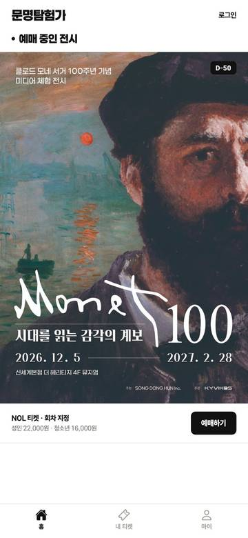
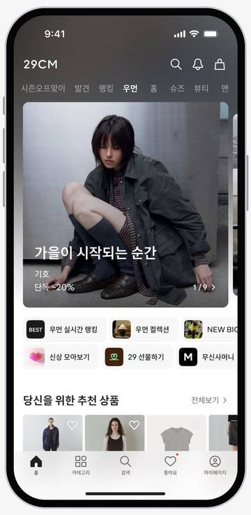
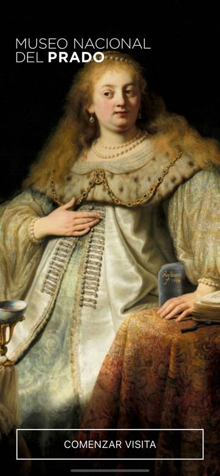
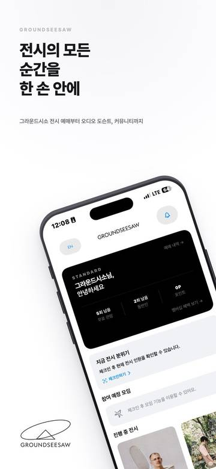

홈








- 첫 화면 세로의 3분의 2가 공식 포스터 한 장이다. 기간·장소·주최가 포스터 속 글자로만 있어서 앱 활자로 읽히는 정보는 아래 예매 행 한 줄뿐이다. 29CM는 같은 자리를 이미지 배너로 쓰고 정보는 배너 밖 UI 활자로 둔다.
- 포스터 아래는 빈 흰 면이다. 전시가 1건이라 두 번째 카드도 다음 전시 자리도 없다. 웹 홈은 '다음 전시를 준비하고 있습니다' 슬라이드로 두 번째 자리를 만든다.
- 섹션 제목 앞 검은 점은 장식이다. 티켓·관람 상태 카드는 티켓이 있을 때만 나타나서, 비로그인 첫 화면에는 내 관람으로 가는 길이 없다. 그라운드시소는 회원 카드를 홈 맨 위에 고정한다.